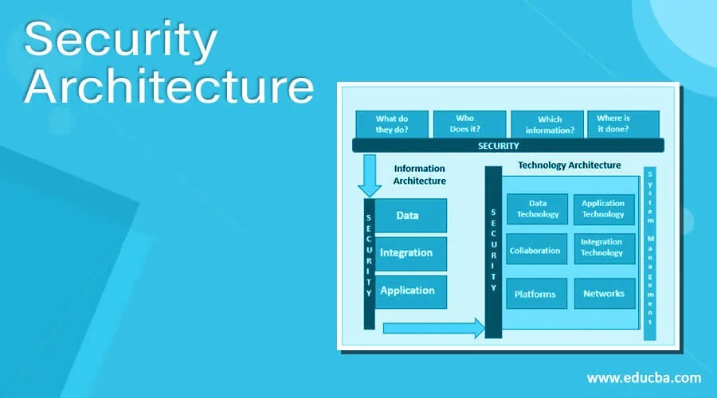

Security Architecture Design
Designing secure systems and networks with layers of security controls (firewalls, intrusion detection systems, encryption, etc.)
START TASK1/01

Implementing Security Controls
Managing access controls, including multi-factor authentication and role-based access systems.
START TASK Pay premium to unlock these tasks1/02

Security Awareness Training
Developing and delivering training to employees on how to recognize and prevent cyber threats, such as phishing or social engineering.
START TASK Pay premium to unlock these tasks1/03

Security Software Development
Building tools like intrusion detection systems (IDS), data loss prevention (DLP) solutions, or encryption tools to improve an organization’s security.
START TASK Pay premium to unlock these tasks1/04
Security Assessments and Audits
Performing risk assessments to identify potential threats to an organization's information assets
START TASK Pay premium to unlock these tasks